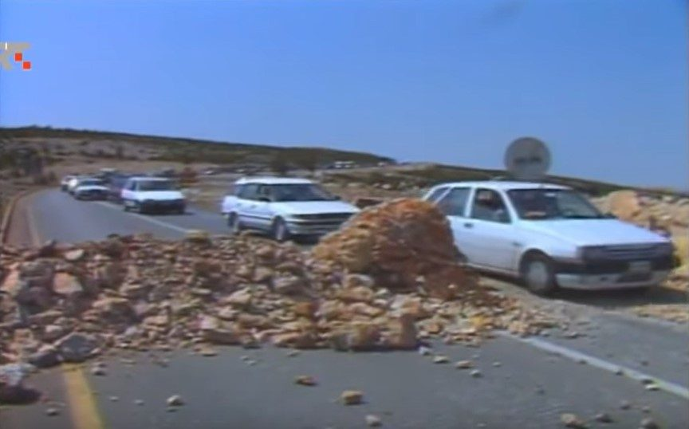
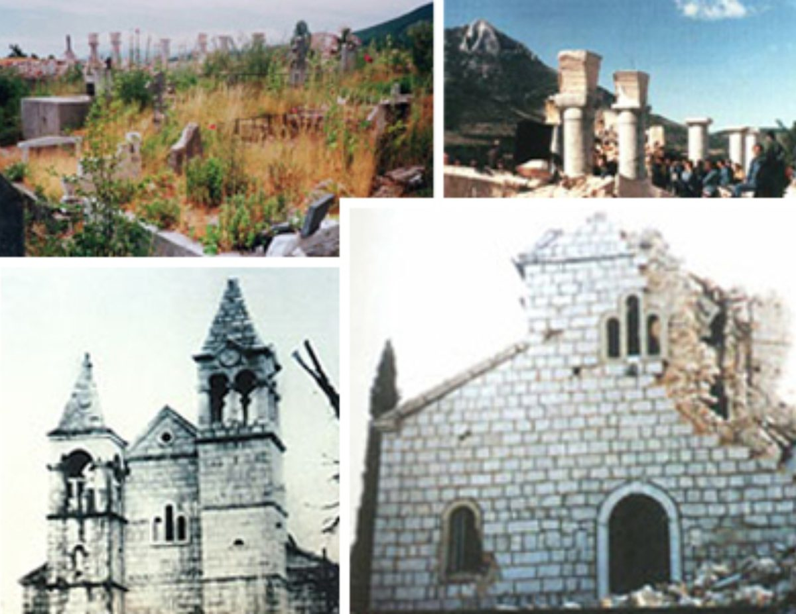
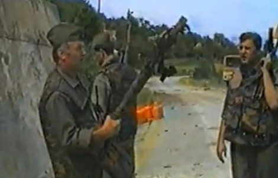
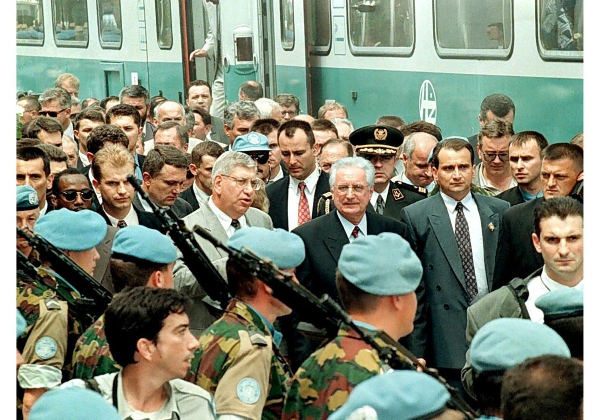

Knin je od 1990. do 1995. godine bio političko i vojno središte samoproglašene "Republike Srpske Krajine" - RSK.
Strateška važnost Knina uoči rata
Prometno čvorište: Knin je oduvijek imao iznimnu geostratešku važnost jer povezuje kontinentalnu Hrvatsku s Dalmacijom. Kroz grad prolaze ključne cestovne i željezničke pruge koje spajaju Zagreb sa Splitom, Zadrom i Šibenikom.
Kraljevski grad: Osim prometnog značaja, Knin je kao prijestolnica srednjovjekovnih hrvatskih kraljeva imao golemu simboličku vrijednost za hrvatski narod, zbog čega je od samog početka bio glavna meta pobunjenika.
Početak pobune i "Balvan revolucija" (1990.)
Blokada prometnica: Pobuna je započela 17. kolovoza 1990. godine, kada su lokalni srpski pobunjenici, predvođeni Milanom Babićem i Milanom Martićem, blokirali prometnice oko Knina balvanima i stijenama. To je onemogućilo komunikaciju između sjeverne i južne Hrvatske. Ova je blokada odsjekla hrvatsku obalu i zadala težak udarac turizmu i gospodarstvu.
Progon stanovništva: Ubrzo nakon preuzimanja vlasti od strane pobunjenika, uz potporu Jugoslavenske narodne armije (JNA), započeo je masovni progon nesrpskog (većinom hrvatskog) stanovništva iz Knina i okolnih sela.

Napadi na okolna hrvatska sela (1991.)
Stradanje Kijeva: U ljeto 1991. godine pobunjene srpske snage i JNA započele su s otvorenim napadima na preostala hrvatska mjesta u kninskom kraju. Posebno se ističe napad na selo Kijevo krajem kolovoza 1991., koje je nakon žestokog granatiranja i zračnih napada potpuno spaljeno i uništeno.
Zatvor u Kninu: Tijekom ratnih sukoba u kninskoj tvrđavi i staroj bolnici uspostavljeni su logori i zatvori. U njima su bili zatočeni i mučeni brojni hrvatski branitelji i civili s područja cijele Dalmacije.

Razdoblje okupacije (1991. – 1995.)
Središte paradržave: Tijekom četiri godine okupacije, Knin je funkcionirao kao glavni grad RSK. U njemu su bile smještene sve ključne institucije pobunjenika, kao i zapovjedništvo Glavnog štaba njihove vojske.
Gospodarski i društveni kolaps: Grad je u ovom razdoblju bio potpuno izoliran od ostatka Hrvatske. Unatoč prisutnosti mirovnih snaga UN-a (UNPROFOR), životni standard je drastično pao, vladala je opća nesigurnost, a gospodarstvo je bilo u potpunom slomu.

Život u izolaciji i kulturocid
Uništavanje baštine: Tijekom okupacije sustavno su rušene i pljačkane katoličke crkve, kulturni spomenici i hrvatske obiteljske kuće kako bi se izbrisao svaki trag hrvatske povijesti na tom prostoru.
Demografske promjene: Dok je gotovo cjelokupno nesrpsko stanovništvo bilo protjerano, u grad su se naseljavali izbjeglice iz drugih krajeva. Nedostatak osnovnih namirnica, struje i lijekova obilježio je svakodnevicu sve do ljeta 1995. godine.
Operacija "Oluja" i oslobođenje (kolovoz 1995.)
Ključni cilj: Vojno-redarstvena operacija "Oluja" započela je u rano jutro 4. kolovoza 1995. godine. Knin je bio glavni strateški cilj operacije.
Ulazak hrvatskih snaga: Već drugog dana operacije, 5. kolovoza u prijepodnevnim satima, postrojbe 4. i 7. gardijske brigade Hrvatske vojske (Pume i Pauci) ušle su u grad.
Simbol pobjede: Oko 10 sati na Kninskoj tvrđavi zavijorila se golema hrvatska zastava, što je postalo najsnažniji simbol završetka Domovinskog rata i uspostave teritorijalne cjelovitosti Hrvatske. Danas se taj dan slavi kao državni praznik – Dan pobjede i domovinske zahvalnosti te Dan hrvatskih branitelja.

Povratak i obnova grada nakon 1995.
Vlak slobode: Neposredno nakon oslobođenja, 26. kolovoza 1995. godine, iz Zagreba je preko Knina do Splita prošao "Vlak slobode", čime je simbolično ponovno uspostavljena prometna povezanost sjevera i juga Hrvatske.
Suvremeni Knin: U godinama nakon rata započela je obnova porušenih domova, infrastrukture i gospodarstva. Danas je Knin moderan grad, središte obilježavanja Dana pobjede i važno obrazovno i kulturno središte Šibensko-kninske županije.

Više informacija o tijeku i događajima iz Domovinskog rata potražite na stranicama Hrvatskog memorijalno-dokumentacijskog centra Domovinskog rata ili u članku Hrvatske enciklopedije.